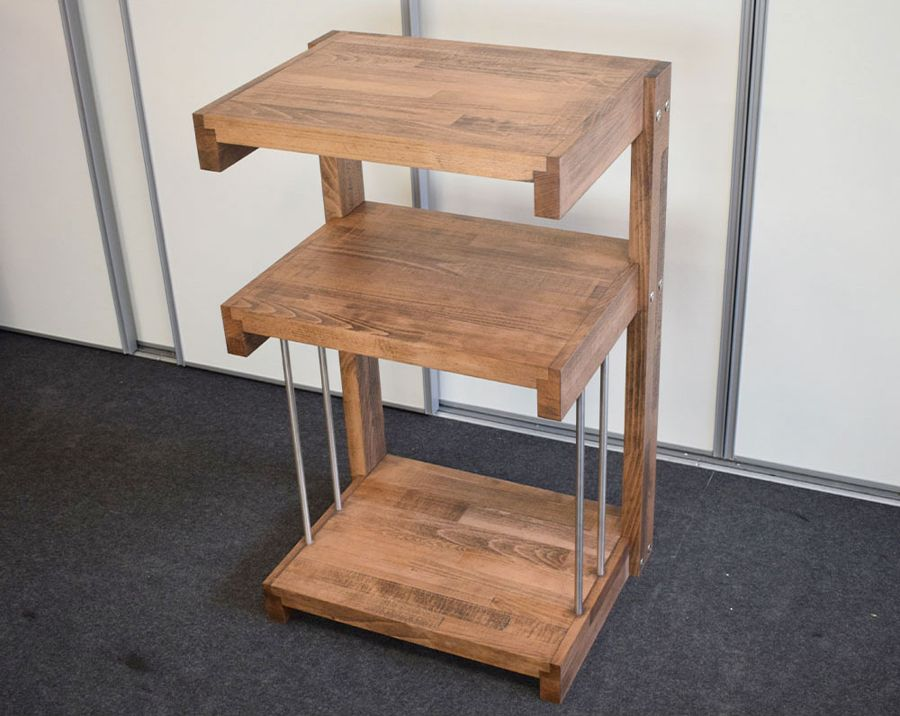
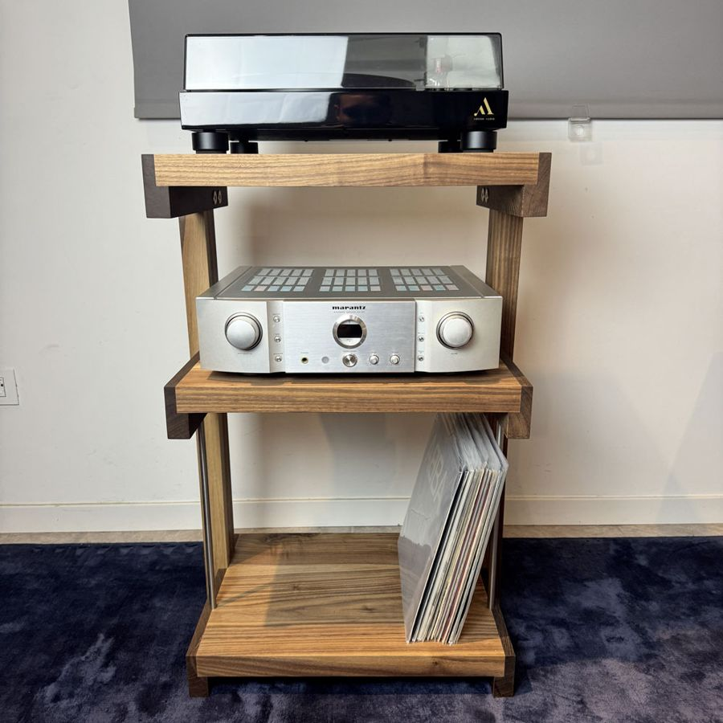
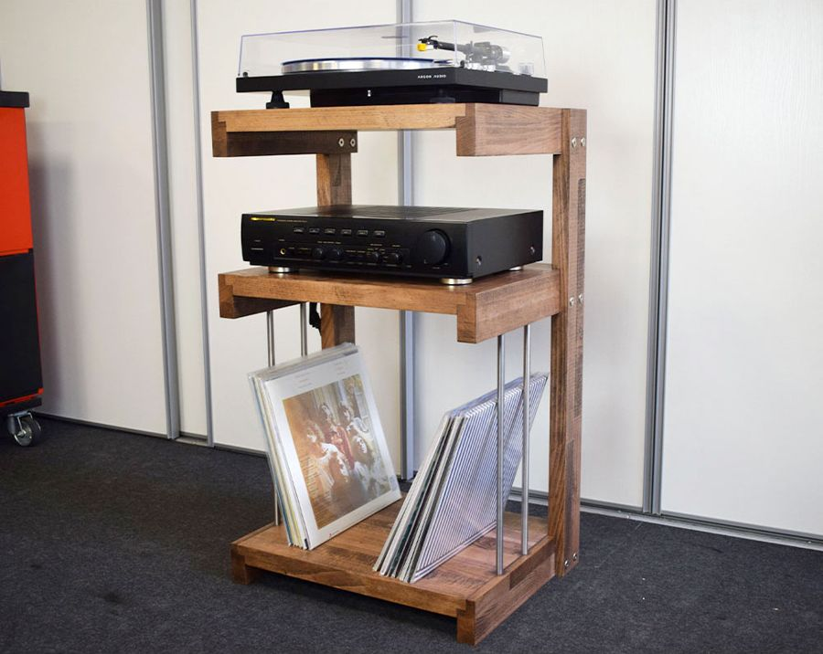
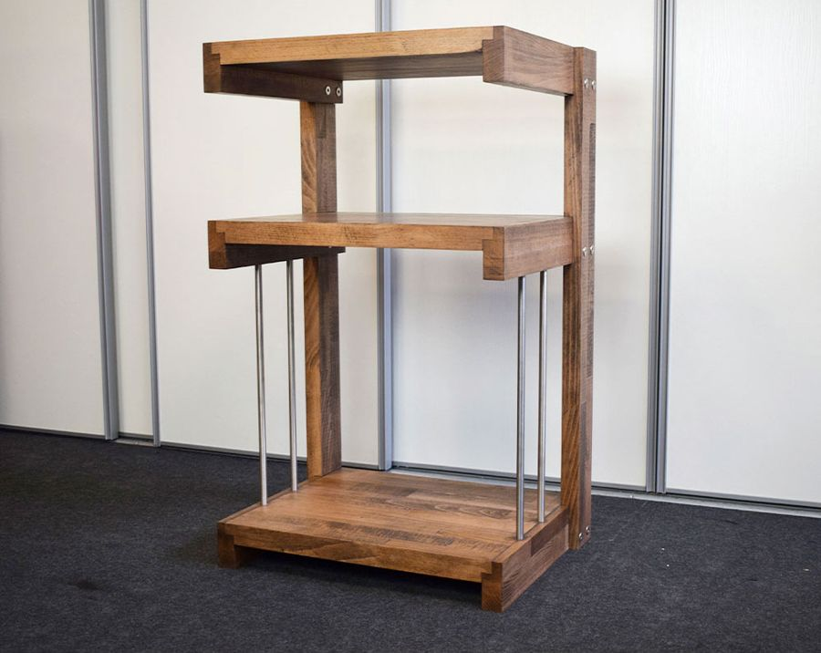

Extrasound Vinyl Mobile per giradischi in legno massello
Il mobile hi-fi in legno massello per chi ascolta vinili: il giradischi sul piano, l'amplificatore al centro e fino a 90 dischi sotto.
Essenza
- Legno massello
- Fino a 90 LP
- 23 kg
599 € in Faggio · 799 € in Noce Canalettoprezzi su extrasound.it
Come lo costruisco.
Il Vinyl è in legno massello e nasce in due versioni.
FaggioTutto in Faggio massello, bordi dei ripiani compresi. È un legno duro e compatto, che regge il peso di giradischi e amplificatore senza flettere. Il mobile delle foto è tinto noce.
Noce CanalettoFianchi e ripiani in Noce Canaletto massello, con i bordi dei ripiani in wengè: quasi nero, protegge gli spigoli e disegna il profilo del mobile.
È un modello finito: lo trovi già pronto nel nostro showroom di Cesena.
Ripiani incastrati nei fianchiOgni fianco ha uno scasso in cui entra il ripiano: il peso poggia sul legno del fianco e il mobile resta più solido. Le viti tra fianchi e ripiani tengono unito il tutto.
Tondini in acciaioSui fianchi, i tondini tengono in piedi i vinili del ripiano inferiore.
In qualsiasi legno e finituraSu richiesta Fabrizio costruisce il Vinyl in qualsiasi legno e con qualsiasi finitura.
Un piano per ogni cosa.
Tre livelli pensati sul peso e sulle misure degli apparecchi.

Piano superiore · giradischiRegge fino a 20 kg. È il punto più stabile del mobile, lontano dal pavimento.
Ripiano centrale · amplificatoreAltezza utile 28,4 cm, portata 20 kg. C'è spazio per l'aria intorno all'apparecchio.
Ripiano inferiore · viniliAltezza utile 39 cm, portata 40 kg: circa 90 LP con le coste in vista.



Le misure.
Struttura e ripiani sono in legno massello. Le misure cambiano di poco tra la versione in Faggio e quella in Noce Canaletto.
Dimensioni (L × H × P)57,6 × 82,5 × 39,6 cm
Ripiani53,6 × 39,6 cm
Altezza utile centrale28,4 cm
Altezza utile inferiore39 cm
Portata20 kg piano · 20 kg centrale · 40 kg inferiore
Capienzacirca 90 LP
Peso23 kg
MaterialeFaggio massello oppure Noce Canaletto massello
Bordi dei ripianiFaggio
UnioneRipiani a incastro nei fianchi, avvitati
Su richiestaQualsiasi legno e finitura